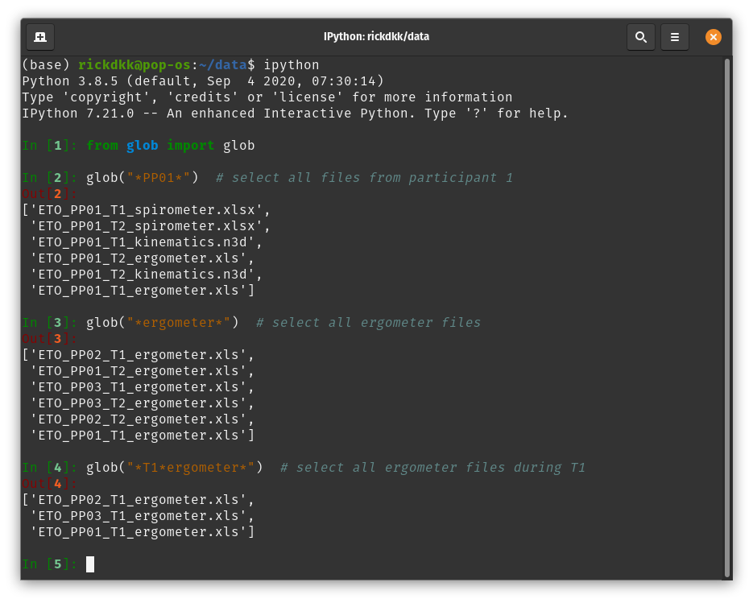
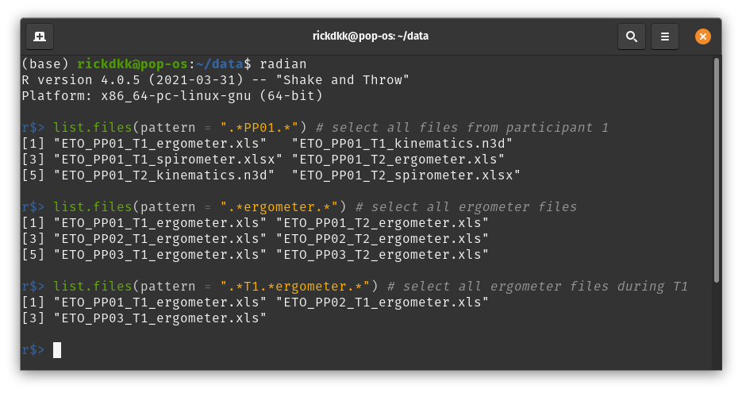
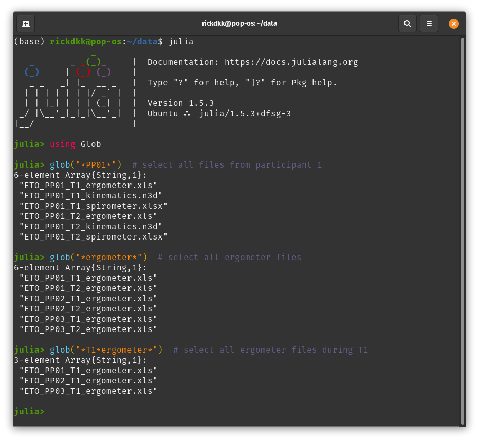
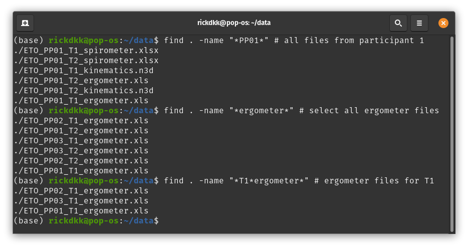
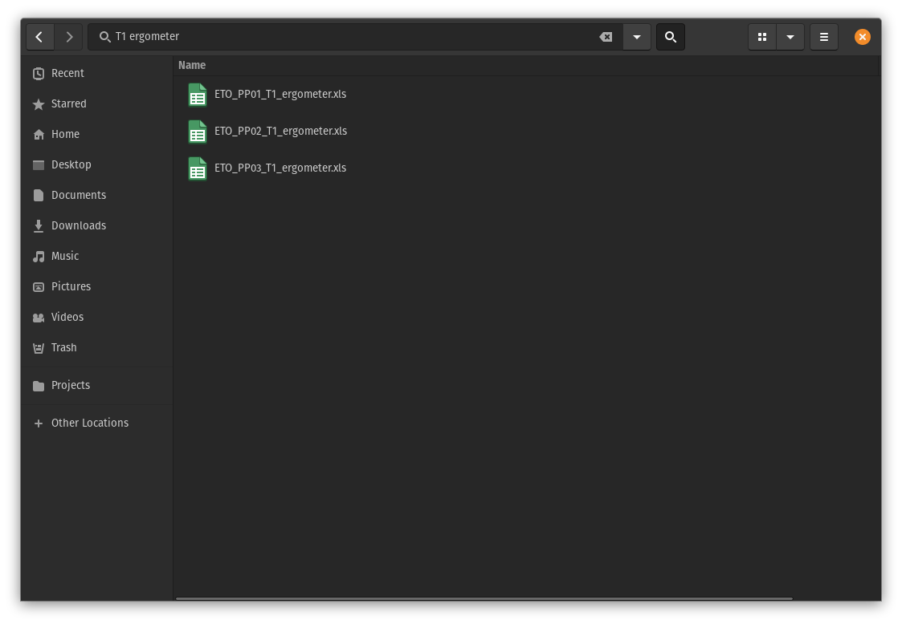

Files organiseren
Inhoud
Files organiseren¶
De naam van een file is belangrijk voor het identificeren van een file, maar ook voor het werken met de file. Geef daarom files een logische naam met waar nodig een deel van de metadata in de naam. Afhankelijk van de situatie (en persoonlijke voorkeur) kunnen er verschillende keuzes worden gemaakt, maar drie principes blijven leidend 1:
het moet makkelijk te lezen zijn voor de computer
het moet makkelijk te lezen zijn voor de gebruiker
het moet goed te sorteren zijn
Good practices¶
Check wat de standaard is in jouw onderzoeksgroep zodat het project aansluit bij bestaande en andere lopende projecten. Bedenk niet zelf een systeem als dat niet strikt noodzakelijk is.
Kies een systeem en leg dit vast in het DMP en de README. Door het vast te leggen is het direct voor iedereen duidelijk welke structuur gebruikt gaat worden. Zo kunnen collega’s en studenten meteen de juiste structuur aanhouden. Iets wat tijdens het automatiseren en archiveren veel tijd gaat schelen.
Kies betekenisvolle namen en beschrijf de inhoud van een bestand en geef het niet alleen een getal. Een file zoals figuur_3.png zorgt meteen voor verwarring wanneer er een figuur wordt toegevoegd of verwijderd in het manuscript en zonder te kijken weet je niet welk figuur het betreft. Beschrijf daarom ook altijd de inhoud van een file met de naam.
Bijvoorbeeld: beurskoers_gme.png of BloodImage_001.pngGebruik geen speciale karakters zoals
~ ! @ # $ % ^ & * ( ) [ ] { } ; : " ' < > / \ | ?. In het beste geval moet je er omheen werken in je eigen scripts en in het slechtste geval kunnen deze botsen met het besturingssysteem of andere software.
Bijvoorbeeld: Windows staat geen ASCII control karakters toe in filenamen\/:*?"<>|. Op Linux en OS-X kan dit wel (minus/), maar dan kan je collega de bestanden dus niet openen. Daarnaast snapt Windows het verschil tussen hoofdletters en kleine letters niet, let hier dus ook op.

Gebruik voor een datum altijd ISO-8601 (YYYY-MM-DD), alleen dan kan je makkelijk chronologisch sorteren. Meestal is het handig om de datum ergens aan het eind te zetten zodat alle bestanden die bij elkaar horen ook onder elkaar staan.
Bijvoorbeeld: manuscript_2020-12-01.docx of manuscript_2020-12-02.docxMaak handig gebruik van getallen door nullen toe te voegen aan het begin van een getal (dit wordt ook wel zero-padding genoemd) of door de sorteervolgorde te beïnvloeden.
Bijvoorbeeld: BloodImage_1.xml wordt opgevolgd door BloodImage_11.xml en niet BloodImage_2.xml. Zorg er daarom voor dat je begint met BloodImage_01.xml en op die manier doorgaat met nummeren.
Bijvoorbeeld: Door het nummer aan het begin van een naam te zetten zorg je ervoor dat men altijd kan sorteren, bijv. 01_exploratory_analysis.ipynb, 02_data_cleaning.ipynb, etc.Gebruik geen spaties, want deze worden gebruikt om commando’s te scheiden in de command-line. Gebruik een minteken (-), camelCase, of PascalCase om woorden te scheiden (afhankelijk van voorkeur).
Bijvoorbeeld: BloodImage_2020-12-01_001.xml of blood-image_2020-12-01_001.xmlGebruik een underscore voor verschillende elementen van een bestandsnaam zodat men deze later kan splitsen.
Bijvoorbeeld: In het bovenstaande voorbeeld is het makkelijk om de naam, datum, en metingnummer uit de bestandsnaam te halen door de naam te splitsen. De volgorde van de elementen bepaalt hoe de bestanden standaard gesorteerd worden.Gebruik versienummers of — nog beter — een versiebeheersysteem. Spreek van tevoren af wat de strategie is voor versiebeheer zodat je niet uitkomt op een manuscript_v2_FINAL_FINAL.docx. Men kan bijvoorbeeld semantic versioning gebruiken.
Mini-quiz¶
Welke van deze voorbeelden is geschikt:
Abstract for ISB 2020-08-16.docx
Fout: de filenaam bevat spaties, dat kan het automatiseren van analyses verhinderen.
abstract-for-isb_2021-08-16.docx
Correct: de datum is in YYYY-MM-DD, het is duidelijk wat de inhoud van de file is, en de naam bevat geen speciale karakters.
abstract-for-isb_16-08-2021.docx
Fout: de datum is niet op een sorteerbare volgorde gegeven, gebruik altijd YYYY-MM-DD.
Welke van deze voorbeelden is geschikt:
fig01_regplot-speed-vs-power.png
Fout-ish: er is zero-padding toegepast en het is direct duidelijk om welk figuur het gaat, maar kán onduidelijk zijn wanneer het figuurnummer in het manuscript veranderd.
fig_regplot-speed-vs-power.png
Correct: het is direct duidelijk om welk figuur het gaat en door te beginnen met fig staan alle figuren onder elkaar in de map wanneer gesorteerd wordt (niet noodzakelijk).
figure_01_2020-08-16.png
Fout: er is een versienummer toegevoegd op basis van de datum, maar het is niet duidelijk wat de inhoud van de file is.
Een systeem: voorbeeld¶
Hieronder volgt een voorbeeld uit onderzoek naar rolstoelpropulsie dat vergelijkbaar is met de casus. Aan het begin van het project was duidelijk dat het zou gaan om ongeveer 1000 files, dus er was een strategie voor het benoemen van files afgesproken, zodat de studenten die hielpen met de dataverzameling direct alles in het juiste format konden opslaan. Er werd gekozen voor een strategie die de ‘nesting’ van de data reflecteerde: er zijn meerdere proefpersonen, die worden meerdere keren gemeten, met meerdere meetinstrumenten. De bestandsnaam kreeg dus de volgende hiërarchische opbouw:
<experiment>_<proefpersoon_id>_<meting>_<meetinstrument>.<extensie>
Bijvoorbeeld: WL_PP01_T01_ergometer.ods, ofwel de ergometerdata van het ‘WL’ experiment van proefpersoon 01 op tijd 01.
Hiermee is alle metadata van een bestand direct beschikbaar in de filenaam en zijn de namen ‘machine readable’, daardoor
kunnen we door gemakkelijk data selecteren (door te ‘globben’). Met deze structuur kunnen we na de data verzameling,
bijvoorbeeld, alle data van proefpersoon 1, alle ergometer data, of alle ergometer data van T01 selecteren:





Het is hierbij dus erg belangrijk dat de bestandsnamen consistent en voorspelbaar zijn. Een typo kan ertoe leiden dat er bestanden worden overgeslagen. Leg dus ook goed vast wat de conventie is m.b.t. het zero-padden van nummers en het gebruik van hoofdletters. De voordelen zijn echter gigantisch: het handmatig selecteren van 100 of 200 files is onbegonnen werk. Door dit process te automatiseren kunnen we veel tijd besparen. Als dan later blijkt dat er toch een nét een iets andere selectie nodig was is dat ook geen probleem.
- 1
Bryan J. Naming things. 2015 May 04. Retrieved from: https://speakerdeck.com/jennybc/how-to-name-files